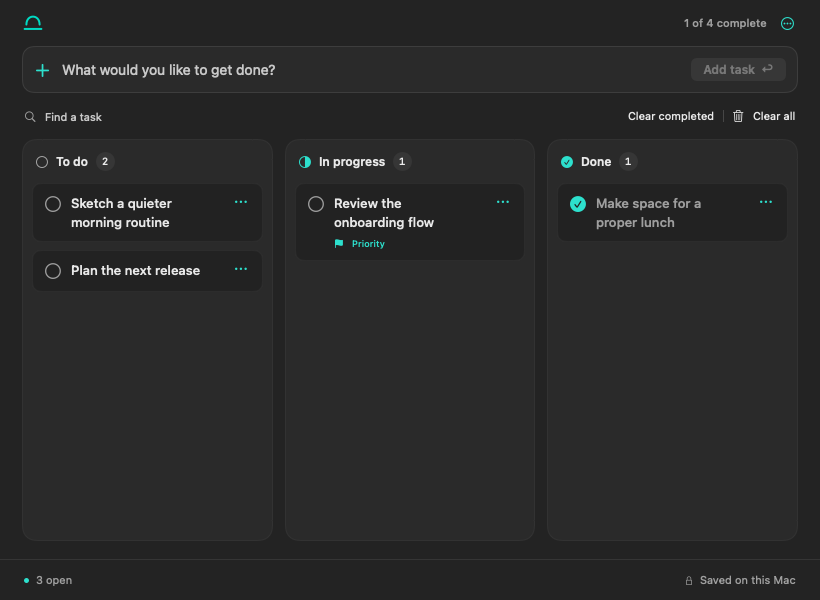

Catch it before it’s gone.
A thought, a small errand, the next step. Open your menu bar, type, and press Return. A tiny confetti burst marks the moment.
⌘NNew task, while the board is openA small app for a clearer day
Catch the thought. Pick the next thing.
A quiet task board, right in your Mac’s menu bar.

Less managing. More doing.
No workspace to set up. No account to remember.
Just a place for what’s next.
A thought, a small errand, the next step. Open your menu bar, type, and press Return. A tiny confetti burst marks the moment.
⌘NNew task, while the board is openDrag a task into In progress. Its title follows you into the menu bar, keeping your next step in sight.
To do → In progress → DonePriorities, search, quick edits, and undo. Export your tasks when you need a copy. Clear the finished ones when you’re ready for a fresh start.
⌘ZA little room to change your mindA little space for your day
Daymark 0.1.0 · Free download for your Mac.
Apple silicon (M1 or later) · macOS 13+
SHA-256 checksumYou can download here, but Daymark runs on a Mac.
Up and running
Open the ZIP file, then move Daymark.app to your Applications folder.
Click the sunrise icon in your Mac’s menu bar. Right-click it for quick actions.
Type what’s on your mind and press Return. Drag it across the board as you go.
This early build is ad-hoc signed and has not been notarized by Apple. macOS may block the first launch. Review Apple’s guidance on opening apps safely before deciding whether to allow it in System Settings → Privacy & Security.
The current download is built for Apple silicon. If you have an Intel Mac, you can build the app from the source on GitHub using Xcode command line tools.
Tasks are saved automatically in your Mac’s local preferences. Daymark has no accounts, analytics, or cloud sync. Use Export tasks in the app menu to save a JSON copy.